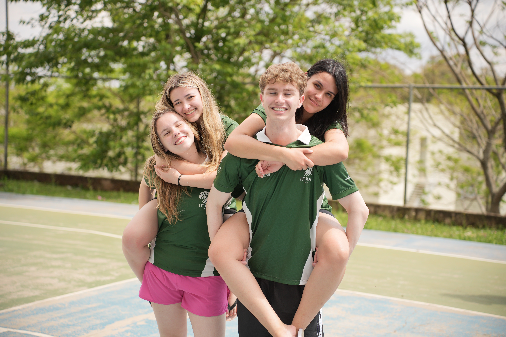
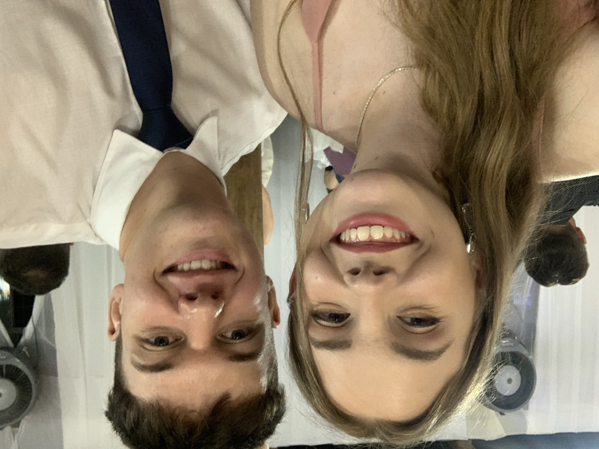
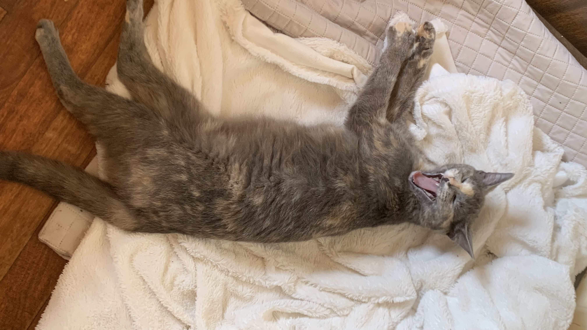

Meu nome é Antonia Carla Viana Mazurkevicz, tenho 17 anos e nasci em 10 de fevereiro de 2009, na cidade de Getúlio Vargas. Atualmente, estudo no Instituto Federal de Educação, Ciência e Tecnologia do Rio Grande do Sul – Campus Sertão, onde curso o Técnico em Manutenção e Suporte em Informática integrado ao Ensino Médio. Também faço curso de inglês no CCAA, pois amo a língua inglesa e pretendo atuar na área da linguagem, como professora de inglês.
Conheça um pouco mais sobre mimDescubra um pouco mais sobre mim, meus interesses, atividades favoritas e as pequenas coisas que tornam meus dias mais especiais.
Eu amo brincar e ficar com os meus cachorros
e a minha gatinha. Eles são muitos fofos.


Meus livros preferidos são: O retrato de Doryan Gray, Sherlock Holmes: As memórias de Sherlock Holmes e a Lista de convidados.
As minhas músicas preferidas são: Sweet child'o mine, Enjoy the silence e Enter sandman.
No momento tenho apenas 3 jogos que eu gosto, eles são: Termo, The sims 4 e Conexo.
Conhecimentos e assuntos que fazem parte da minha trajetória.
Interesse pelo aprendizado de línguas estrangeiras, especialmente inglês e espanhol.
Interesse por desenvolvimento web, informática e novas tecnologias.
Interesse pelo ensino, aprendizagem e compartilhamento de conhecimentos.
Busca por novas experiências, criatividade e desenvolvimento pessoal.